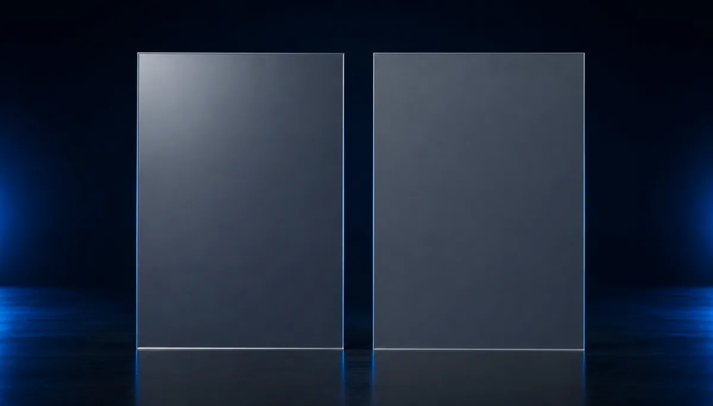
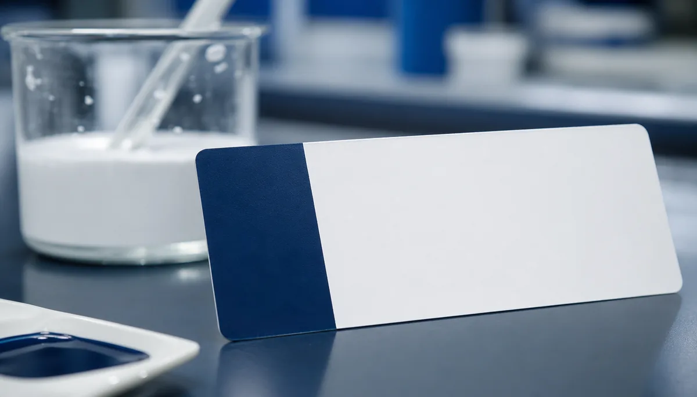

White paper
Waterborne Coating Matting Solution Guide
A complete reference on matting mechanisms, particle-size selection, anti-settling strategy and import-substitution methodology for waterborne systems.
Request the white paperResources
Practical guides and white papers to help R&D and procurement teams choose, replace and troubleshoot silica matting agents in waterborne wood and plastic coatings.
A complete reference on matting mechanisms, particle-size selection, anti-settling strategy and import-substitution methodology for waterborne systems.
Request the white paperHow to pick the right grade by target gloss, dry-film thickness and substrate — mapped to 1:1 benchmarks against Evonik and Grace.
Request the guideShort, practical reads for formulators and buyers.
Particle size, pore volume and surface treatment — and how each one drives gloss, clarity and touch.
Read more
SubstitutionA step-by-step path to drop-in replacement of imported grades in ultra-thin plastic-coating films.
Read more
TroubleshootingWhiting in high humidity, hard caking, viscosity spikes and grey grain — causes and fixes.
Read moreRequest our white paper and selection guide, and we'll include a free 2 kg sample matched to your finish.
Request a Free 2 kg Sample